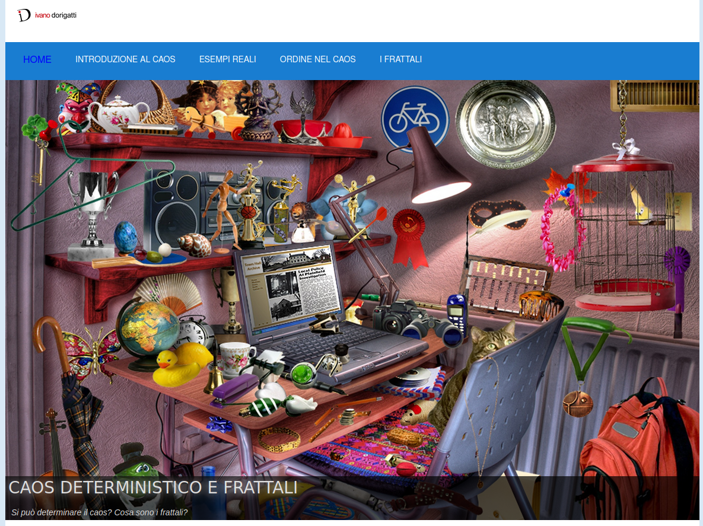

Siti Web Statici - Sito web divulgativo in html e css
La mia passione per l'esplorazione creativa attraverso la programmazione ha trovato espressione in progetti di siti web statici, dove ho utilizzato HTML e CSS per creare contenuti significativi e coinvolgenti. Uno di questi progetti è il sito web Caos Deterministico e Frattali , un'opportunità per divulgare conoscenze e concetti complessi in modo accessibile e coinvolgente.
Sito Web Divulgativo
Caos Deterministico e Frattali

Il progetto "Caos Deterministico e Frattali" è stato concepito come una tesina riadattata al web, con l'obiettivo di presentare in modo informale il concetto di caos deterministico attraverso esempi reali. Il sito web delinea anche il concetto di frattali e come essi possono rappresentare il caos. Questa iniziativa dimostra la mia abilità di tradurre concetti complessi in contenuti accessibili a un vasto pubblico.
Struttura Realizzata in HTML e CSS Puro
Una caratteristica distintiva di questo progetto è stata la decisione di creare la struttura del sito web utilizzando solo HTML e CSS puro, senza l'ausilio di framework. Questa scelta ha permesso di esplorare a fondo le potenzialità di base di questi linguaggi e dimostrare la mia competenza nella creazione di pagine web senza dipendere da strumenti esterni.
Estetica Pulita, Leggibile e Responsive
La forma del sito web è stata curata con attenzione per assicurare un'esperienza visiva pulita, leggibile e gradevole. Ogni elemento è stato posizionato con attenzione, garantendo una navigazione intuitiva e piacevole. Inoltre, ho assicurato che il sito fosse responsive, adattandosi in modo ottimale a diverse dimensioni di schermo.
Divulgare Conoscenza Attraverso la Programmazione
Questo progetto rappresenta la mia dedizione nel creare soluzioni innovative per la divulgazione di conoscenza attraverso la programmazione. L'utilizzo di siti web statici come veicolo di apprendimento dimostra il mio approccio versatile e creativo nel mettere in evidenza concetti complessi in modi accessibili.
Conclusioni
La realizzazione del sito web "Caos Deterministico e Frattali" attraverso HTML e CSS puro sottolinea la mia abilità nell'applicare le basi della programmazione per creare contenuti significativi e coinvolgenti. L'esperienza di creare una struttura pulita e responsive riflette la mia dedizione nell'ottenere risultati visivamente attraenti e funzionali. Sono entusiasta di portare questa dedizione e creatività a futuri progetti di siti web statici.
Precedente: Siti Web Statici - Sito Web Personale in Blogger
Successivo: Generatore di Siti Web Statici - Sito Web Portfolio con il SSG Eleventy e uso di ChatGPT